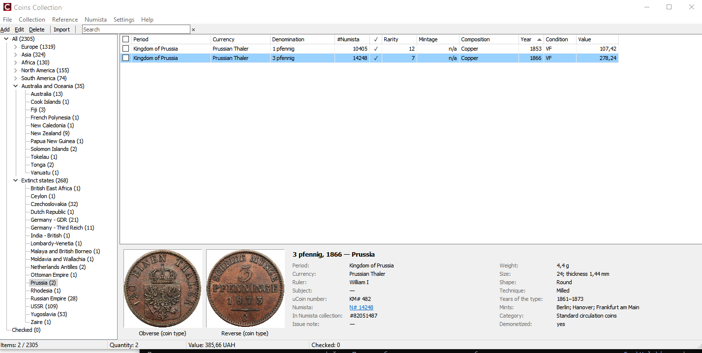
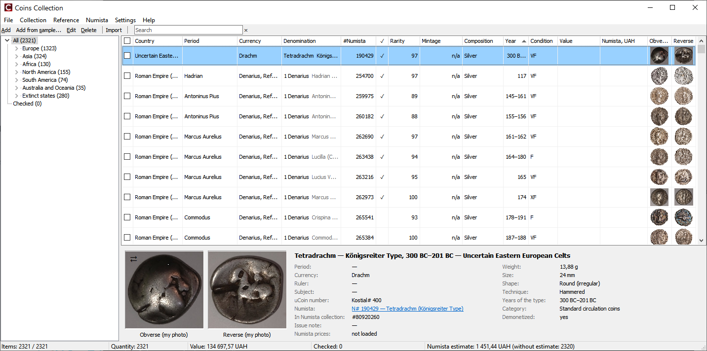

Головне вікно

Дерево навігації
Ліворуч: My collection/Моя колекція, континенти з країнами, No continent/Без континенту, Extinct states/Зниклі держави, For swap/На обмін (ваш список обміну, див. Імпорт з uCoin) і Checked/Позначені (усі позначені монети з будь-яких країн, див. Позначки монет). Число в дужках — кількість примірників. Вузли колекції й підсумки в рядку стану не враховують список обміну.
Пошук
Поле пошуку на панелі інструментів фільтрує список за країною, періодом, валютою, номіналом, роком, сюжетом, різновидом, номером у каталозі, коментарем і назвою Numista (наприклад Crispina).
Список монет
| Колонка | Значення |
|---|---|
| ☐ | Позначка для масових операцій (Позначки монет). |
| Country/Країна, Period/Період, Currency/Валюта, Denomination/Номінал | З uCoin. У монети, пов'язаної з Numista, після номіналу сірим — те, що додає назва Numista: правитель, різновид чи легенда — наприклад 1 Denarius Crispina (CONCORDIA), 10 lekë Non-magnetic. Пам'ятні монети із сюжетом цього не мають. |
| Subject/Сюжет | Сюжет пам'ятної монети (з uCoin або картки монети). Колонка займає вільну ширину списку; якщо змінити її ширину мишею, залишається ваша ширина. |
| #Numista | Номер типу Numista (N#). Сірим — випуск ще не вибрано. |
| ✓ | Примірник вивантажено у вашу колекцію на Numista; у For swap/На обмін — вивантажено цю ж монету з вашої колекції (чи вивантажено сам примірник на обмін — див. колонку Swap/Обмін). |
| Swap/Обмін | Скільки у вас на обмін: у For swap/На обмін — кількість примірника, у колекції — усі примірники на обмін тієї ж монети. ✓ після числа — вивантажено у ваш список обміну на Numista (у колекції — усі). |
| Rarity/Рідкість | Індекс рідкісності з коментаря вашої колекції на Numista (Numista: вивантаження). |
| Mintage/Тираж | Тираж випуску. н/д — у Numista тиражу немає; порожньо — ще не завантажено. |
| Composition/Метал | Метал типу з Numista. |
| Year/Рік, Condition/Стан, Value/Вартість | З uCoin. |
| Numista, UAH/Numista, UAH | Оцінка ціни Numista для стану монети; показується, коли ціни Numista увімкнено (Дані каталогу Numista). |
Клацніть заголовок колонки, щоб відсортувати, ще раз — у зворотному порядку. Типово — за роком, потім за номіналом.
Праве клацання по заголовку колонки: меню Columns/Стовпці показує або ховає колонки (номінал лишається завжди), Row height/Висота рядків — звичайна, середня чи велика, Default columns/Типові стовпці — повернути типовий набір. Колонки Obverse/Аверс і Reverse/Реверс показують мініатюри монети: ваше фото, інакше зображення з каталогу; подвійне клацання по мініатюрі відкриває перегляд фото. Перетягніть заголовок колонки мишею, щоб переставити колонку (колонка позначок завжди перша). Alignment/Вирівнювання — ліворуч, по центру чи праворуч для колонки під курсором. Вибір, порядок і вирівнювання запам'ятовуються.
Програма запам'ятовує розмір і положення вікна, ширину дерева країн, висоту подробиць і ширини колонок, змінені мишею; Default columns/Типові стовпці скидає і ширини колонок, і вирівнювання.

Усі колонки вміщуються у вікно: якщо ні, текстові колонки (країна, період, валюта, номінал, сюжет, метал) звужуються, довгий текст закінчується «…» (повний текст — у подробицях монети). Колонка, ширину якої ви змінили мишею, зберігає вашу ширину.
Подробиці про монету
Під списком: фото аверсу й реверсу (подвійне клацання — перегляд фото) і дані монети у дві колонки. Значення #Numista — посилання на сторінку типу на Numista. У правій колонці — характеристики типу з Numista (вага, розмір, форма, правитель, серія, роки, монетні двори, демонетизація). Якщо ціни Numista увімкнено — рядок Numista prices/Ціни Numista.
Рядок стану
Кількість показаних примірників, їх кількість і вартість, кількість позначених. Якщо ціни Numista увімкнено — оцінка Numista показаних монет (оцінка × кількість) і скільки з них без оцінки.